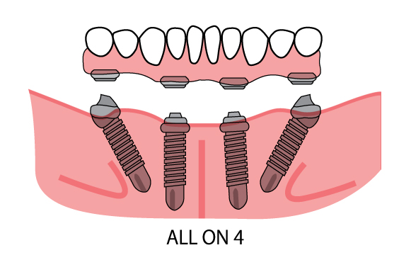

Medical treatment in India has devised a cost-friendly technique for stable dental implant treatment with aesthetic results. The All-On-4™ prosthesis is a protocol that uses a strategically-supported prosthesis of four dental implants which are bio-mechanically positioned for maximum stability. Both the Teeth In a Day and Teeth In an Hour implant techniques can be performed using this method of treatment. There are numerous hospitals in Mumbai as well as other parts on India that provide efficient and economical treatment.
The All-On-4 dental implant procedure dates back 1987 when four implants were used to support permanent teeth for the first time. The technique being reliable, has continued to be an effective resource for more confident smiles. The success rate for this technique, built upon four implants in each arch is the same as the success rate for cases requiring more anchorage. 3D scans from the i-CAT scanner make the planning process perfect.
This system allows a patient to choose from a wide array of approaches for a new smile. The final prosthesis can be made in various laboratory materials ranging from acrylic to fine porcelain, ensuring the same attention to aesthetic touch, and also allowing cost to be incurred to suit the patient’s budget. What makes this technique more desirable is that it is upgradeable. Implants can be added later and/or the prostheses can also be fabricated with a higher grade of material as per the patient’s convenience.